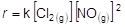
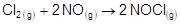
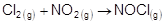
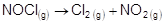
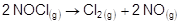

7. To refine gold to the highest degree of
purity (99.999 %), an industrial chemical procedure known as the Wohlwill process is used.
The primary electrolyte needed in the Wohlwill process is a very toxic gas named nitrosyl chloride, NOCl.
NOCl can be formed by the
direct combination of two substances.
At 100 °C, the rate law expression for the
synthesis of NOCl is:

Which of the following
reactions represents the formation of NOCl by using
the rate law above?
A) 
B) 
C) 
D) 